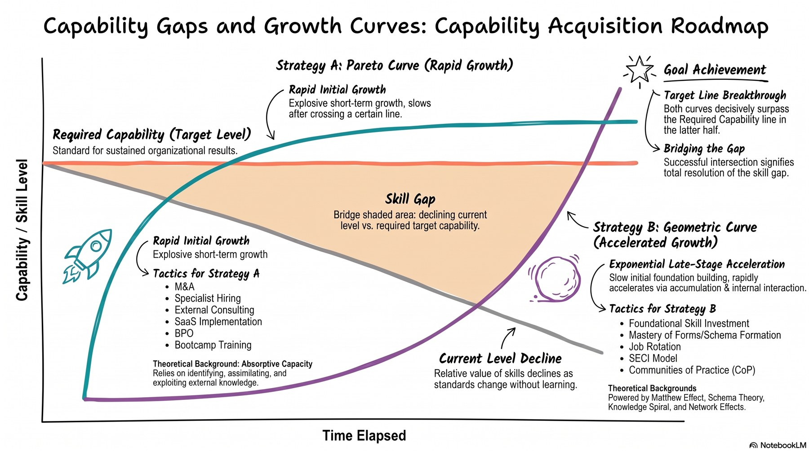
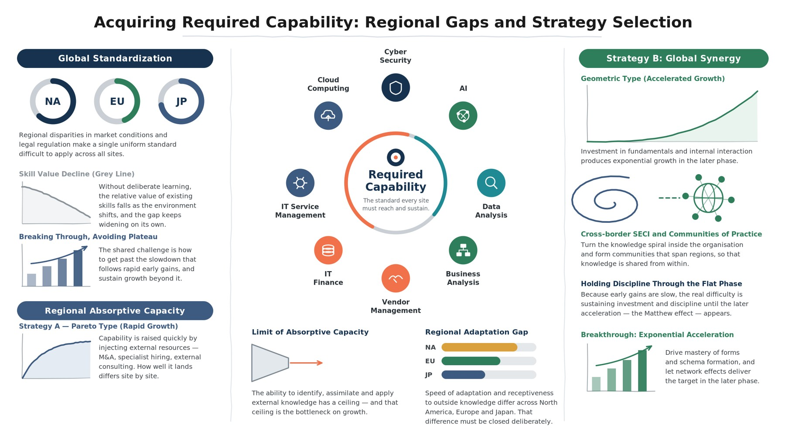

Strategy B is not an alternative to Strategy A. It is the precondition that keeps Strategy A working.
This part sets out the reasoning.
Almost every discussion about capability reduces to three lines.

The two growth curves in the figure correspond to two modes of acquiring capability. Asking which is better is not a valid question. They differ in how fast they start and where they stop.
| Strategy A — Pareto curve (rapid-rise) | Strategy B — geometric curve (accelerating) | |
|---|---|---|
| Shape | Explosive early growth, approaching the target quickly. Beyond a certain point, growth flattens out | Slow at first. Accumulation then drives sharp acceleration in the later phase — exponential growth |
| Means | External resources and concentrated investment raise capability in a short time | Mastery of fundamentals plus interaction inside the organisation accumulates capability internally |
| Examples | M&A, hiring specialists, external consultants, SaaS adoption, BPO, bootcamp-style training | Investment in fundamentals, mastery of patterns / schema formation, job rotation, the SECI model, communities of practice (CoP) |
| Theoretical basis | Absorptive capacity | Matthew effect, schema theory, the knowledge spiral, network effects |
| Principal difficulty | The plateau. How to get past the slowdown that follows rapid early gains | The flat early phase. Whether investment and discipline can be sustained until acceleration appears |
Strategy A must not be treated as a closed chapter. It is the route we currently depend on, and a means we will continue to use within limits. Without understanding how it works, everything that follows collapses into the crude reading that "external dependence is bad".
Strategy A is a transformation-and-acquisition approach for closing a severe skill gap in a short period.
The defining feature of Strategy A is the explosive take-off visible as soon as the measure begins. Because fully formed capability is brought in from outside, the organisation approaches the target level rapidly and sees visible results immediately.
Beyond a certain point, however, the curve flattens, and an early plateau is its inherent fate.
This strategy works by buying or borrowing capability the organisation does not have.
| Measure | Content | What is transplanted |
|---|---|---|
| M&A / acqui-hire | Acquire an entire company or team holding the required technology or expertise | Nominal capability, obtained instantly |
| Mid-career hiring / executive recruitment | Bring in external experts who can perform from day one | Raises the organisation's execution power at a stroke |
| External vendors / consultants | Draw temporarily on external resources with advanced expertise | Produces results on a per-project basis |
| SaaS / platform adoption | Avoid in-house development by adopting ready-made, state-of-the-art tools | Lifts operational capability |
| Intensive bootcamp training | Short, high-density instruction | Rapid acquisition of specific skills |
What determines the success and the ceiling of Strategy A is not so much the quality of the external source as the receiving side's absorptive capacity.
For an organisation overseeing three sites, Strategy A is critical for responding to discontinuous change. Shifts such as AI and cyber threats do not wait for the pace of internal accumulation.
| Content | |
|---|---|
| Significance — relieving urgency | Leaving a severe skill gap unaddressed erodes competitive position quickly. Strategy A first pushes the organisation past the immediate target level and buys the time needed to survive |
| Risk — variance between regions | Absorptive capacity and receptiveness differ by site. Even a uniform Pareto-type measure led by HQ will produce different take-off speeds and different degrees of eventual embedding at each site |

The second row is precisely what this figure calls the "regional adaptation gap". The principle that we do not apply a single uniform standard across the three sites is our response to that structure (→ Part II, Ch. 8).
That sentence fixes the position of this entire document. The next chapter asks what we have done with the time we bought.
This is the starting point of the document, and the point at which the discussion turns from the general to our own situation.
The Japan site has supported the business for several decades without ever having enough headcount to cover every domain, and has therefore been dependent on vendors over the long term. In terms of §3.2, this is the third measure — external vendors and consultants — run not as a series of projects but as a permanent operating model.
And it has worked. Without the headcount to cover every domain, the organisation has kept the entire business value chain running without interruption. Given that this held for decades, the choice should be judged as having been correct.
What Strategy A buys is time. The question about our own situation therefore reduces to one point.
Had the foundation of Strategy B — a mechanism for converting externally obtained knowledge into an organisation-specific strength — been built in parallel, capability would now be accumulated. Yet we do not even possess the means to confirm whether it has been (→ Part II, Ch. 10).
Was it never built, or was it built and remains invisible? We cannot currently tell the difference.
Restate the absorptive-capacity ceiling from §3.3 in our own terms.
This framework measures capability on three levels (→ Part III, Ch. 13). The middle level — "Can evaluate", meaning a documented record of sending back, requesting changes to, or proposing alternatives to an external estimate or deliverable, with reasons — is the operational definition of absorptive capacity itself.
The consequence has a practical corollary.
This document does not argue that external dependence should end. As §3.4 showed, that would mean giving up the ability to respond to discontinuous change. What it sets out is the condition under which external dependence stays controllable.
| Out of scope | Reason |
|---|---|
| Compensation systems grades, pay, performance rating | The framework presumes that measurement results are not connected to compensation. Putting that disconnection in writing, however, is in scope and mandatory (→ Part V, Ch. 29) |
| Training content design what to teach | The framework's output stops at "who is missing what". Designing the content belongs to a different function |
| Local-entity governance employer of record, labour law, work rules | These belong to the local legal entities and are not moved by transferring definitional authority |
| Numerical insourcing targets | Not set. What is set is a decision rule; the ratio emerges as a result (→ Part V, Ch. 32) |
| Method for building workload up from the business plan | Depends on the characteristics of each site and function. This document defines units and division of responsibility only |
| Execution of placement | Regulation, visas, language, compensation structures and individual intent all sit outside skills. What this framework delivers is the ability to make the determination |